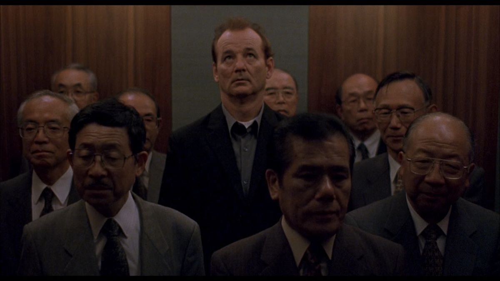

There's a scene in Lost in Translation where Bob Harris (played by Bill Murray) rides into Tokyo, jet-lagged in the back of a taxi, and passes a billboard with his own face on it, selling whiskey. He looks at it the way you'd look at a stranger. He's in a foreign city, in a language he doesn't speak, shooting the ad instead of doing a play, and his wife faxes him about carpet samples. Despite being thirty years younger and Asian — clearly not white — I still feel a lot like Bob: standing inside a life that's supposed to mean something, unable to feel the meaning, seeing it from the outside and not knowing how to get back in.
I've lived in Shanghai, Seoul, Tokyo, Paris, San Francisco, and New York, with a childhood in Minnesota before any of it. I'm 22. I don't know what that adds up to, but I've been trying to figure it out.
The thing I keep coming back to is that people are mostly products of the gravity they happen to fall into. The kid in SF chasing YC isn't choosing freely. He's being carried by a current. The izakaya bartender in Osaka isn't choosing freely either. Neither am I. We're all expressions of paths we got on without entirely meaning to. And almost everyone, if you watch long enough, is leaning toward somebody else's current. The banker wants the artist's mornings. The artist wants the banker's paycheck. Nobody says it out loud.
In Paris I was nineteen and broke and somehow always drinking with someone at 3 a.m. We'd eat dinner at 9, leave the restaurant at midnight, find a bar, find another, end up at a kebab place at 4. One night two of us crammed onto a Lime scooter and almost crashed it into the Seine. I was meeting people for the first and last time, and it didn't hurt. Paris taught me that you can be in something briefly and have it count. I believed that for about a year.
Then in Korea I met someone who thought the way I do. I found her weird at first, then realized she was just logical — the thing people usually say about me. We ate melon soda ice cream. We sat in jazz bars for hours and stumbled home drunk arguing about society, economics, why people can't see the edges of their own lives. I never had to translate myself for her. The whole time I was with her, I knew it would end. Paris had lied to me, or I'd outgrown its lesson: you don't experience a thing the same way once you can see its expiration date.
San Francisco and New York were a different kind of reality — less about love and fun, more about work. In SF the grind comes dressed in mission statements; New York at least hands you the bonus check and lets you decide what it means. It was in the Bay that I went on a hike with a girl. It was something like a first date. She had gone to Berkeley, and the only thing she could talk about, the entire hike, was getting her little sister into Stanford. I think she was insecure about Berkeley in a way she couldn't admit, so she'd transferred the whole project onto her sister. What I remember most clearly is that she had no idea she was doing it. The Stanford fixation was, to her, just what a reasonable person talked about on a Saturday. She wanted a different life too. She'd just outsourced the wanting to her sister.
Sofia Coppola shot Tokyo as a city where nothing translates. That wasn't my Tokyo. In Tokyo I met a fitness trainer who had won the Japanese version of American Ninja Warrior. I met models. I met bankers. I met a guy from Paris who had moved to Tokyo just for the fun of it. He lived in a communal house with eight other people. None of them were trying to be each other. None of them seemed to think their life was the obviously correct one. In SF every conversation ranks you. In Tokyo the rankings exist but they're plural, and people seem to have made peace with running on a different one than their neighbor.
The izakaya bartender I keep invoking is a real person. Osaka, a six-seat bar, a girl maybe twenty who remembered I didn't like shiitake from the one other time I'd been in. She closed whenever the last customer left, which some nights was 8 p.m. and some nights was 4. I watched her laugh at something a regular said and thought: she is not thinking about me at all. She is not thinking about anyone's life but the one in front of her.
And then there's George. He was my next-door neighbor growing up, and the truth is I barely knew him. He was quiet. He went to MIT for math, I think, and he was maybe the smartest person I've ever been around. He had a good career lined up. He moved to Japan instead. He didn't go for school or work or love. He just moved. He's in Japan now, making less than he'd make as a new MIT grad. He's the bravest person I know. Everyone in this essay is leaning toward a life they won't name. George is the only person I've known who named it — who saw the other hill, had the optionality to walk over, and went. I don't know if I have it in me to do what he did. I think about it more than I'd like to admit.
Here is the part that took me a while to admit. I used to think the SF striver was missing something the izakaya bartender had figured out. I don't think that anymore. The Berkeley girl seemed happy. The izakaya bartender seemed free of the kind of ambition that follows me around. I can't tell whether that's wisdom, circumstance, or just a different idea of what a life is for. I'm probably lucky to have lived in all these places. But none of these people seemed to be thinking about the other lives. I am, all the time — every life I observe brings a new contradiction to what I knew to be true. Maybe they were leaning too and I couldn't see it. The difference is that their wanting, if it existed, pointed one direction. Mine points everywhere at once.
I broke that for myself. I've watched the Berkeley girl and the izakaya bartender and the Paris kid at 4 a.m., and none of them, individually, would trade. But I've seen all of them, and I can no longer fully be any of them.
I've been trying to solve for the global maximum, the best hill to climb. The question isn't which hill. It's whether you can pick one and stay on it. Every time I start wanting one, another version of me interrupts. I'm standing at the fork, and I haven't picked.
It would be tempting to think of myself as outside this gravity. I'm not. My life is, in the scheme of things, pretty average. I'm an Asian guy who does computer science. The biggest risk I'll ever take is starting a company that fails, or becoming a content creator. The path I'm on ends with money. Some of it I'll make. Some of it I won't have to. I have a different gravity than the Berkeley girl or the izakaya bartender. I'm being carried by it just as steadily.
I should probably say I'd trade that for the bartender's life. I wouldn't. I like the money. New York taught me that much honestly — I cashed the checks and ate the dinners and did not feel hollow, whatever I'm supposed to report. I like the comfort. The gravity I keep complaining about is one I'm choosing, every day. Stepping off would feel like an insult to whatever momentum put me here. Sometimes I envy them. They get to want what they want. I do too. I just want mine to look nobler than it does.
But there are my parents. They left China for the United States. They came with a thousand dollars and couch-surfed. Almost no one does that. George bet only himself — one MIT grad's salary, recoverable, his to lose. My parents bet everything they had and then handed me the winnings. The few who make that bet create the gravity their children get born into. They didn't hand me a script. They handed me a blank page. But a blank page bought with that much sacrifice is terrifying to write on. The luxury of being uncertain about what kind of life to live sits on top of the bravest thing anyone in my family has ever done. Total permission is its own kind of gravity.
The hardest question isn't whether I'll be happier or sadder for having seen so many lives. It's whether I'll ever have the nerve to be a statistical deviation on my own terms. If they bet everything they had on a thousand dollars and a stranger's couch, can I really bet what they earned me, just to be a disappointment? Or will my life just be the safe, predictable return on their investment?